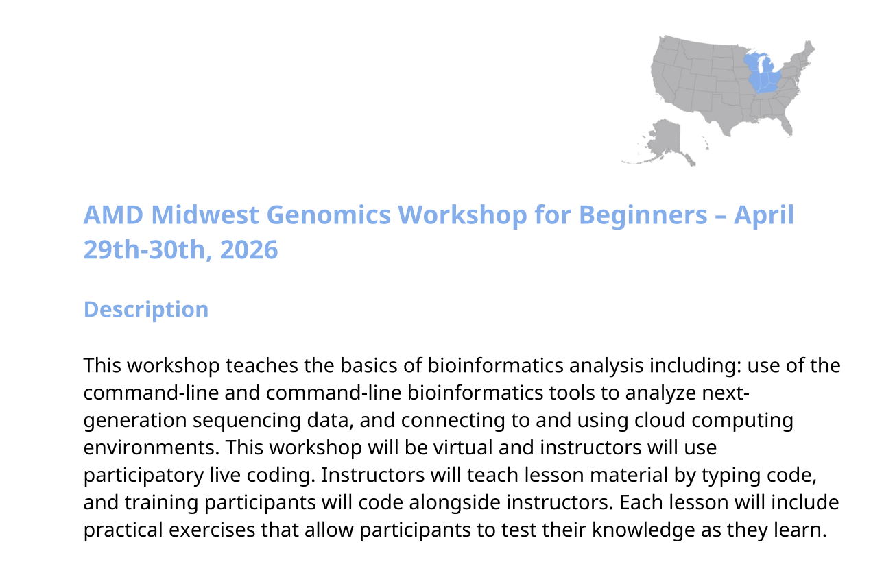
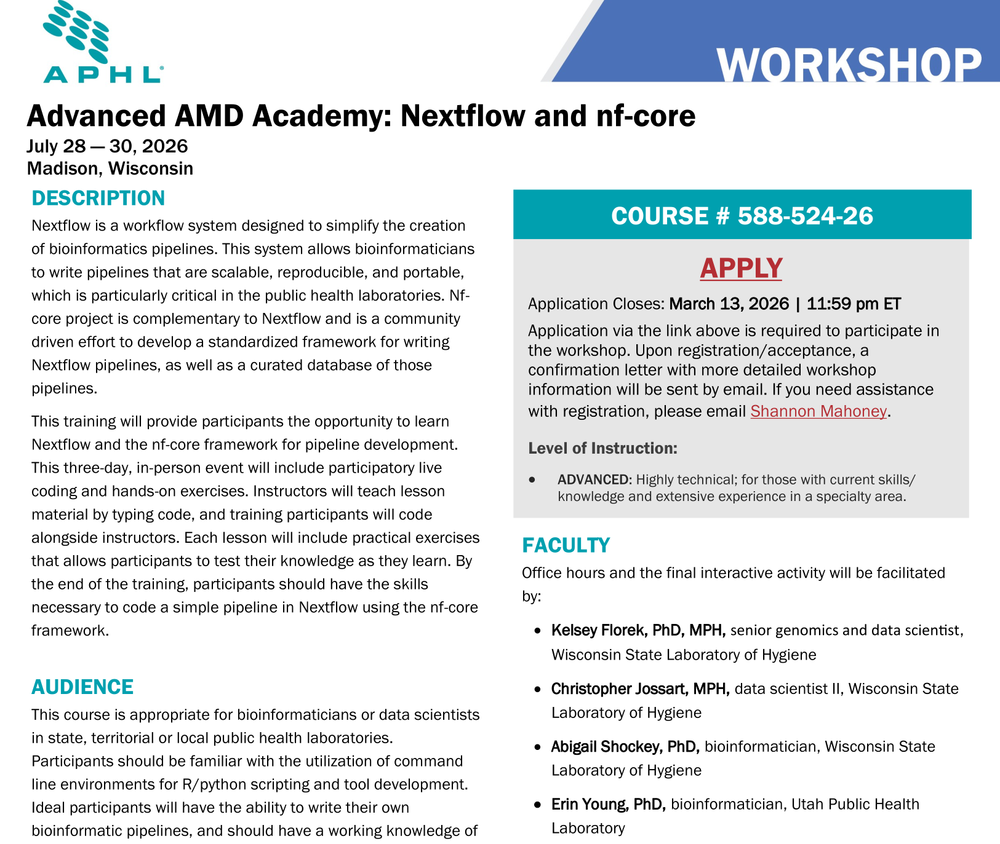
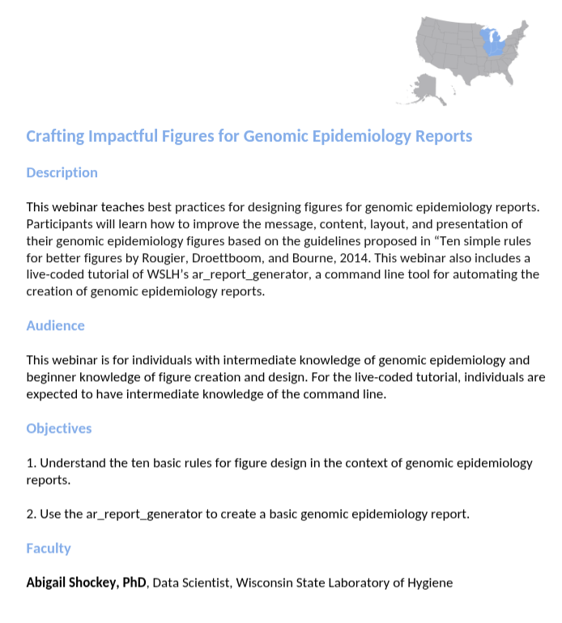
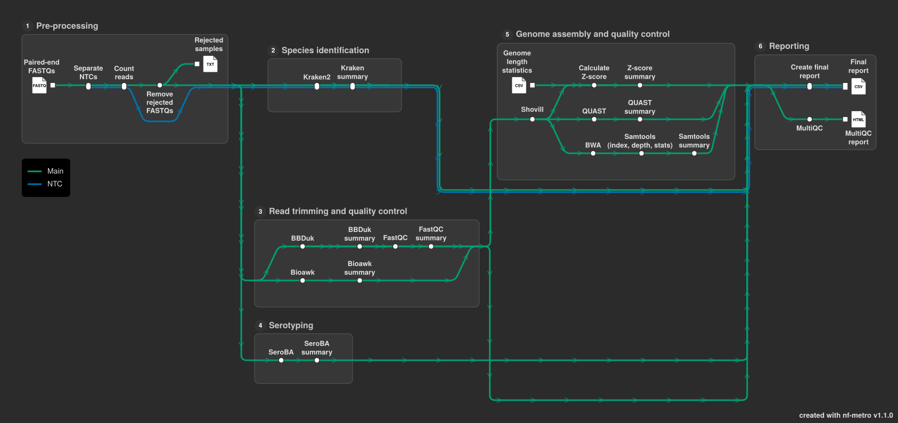
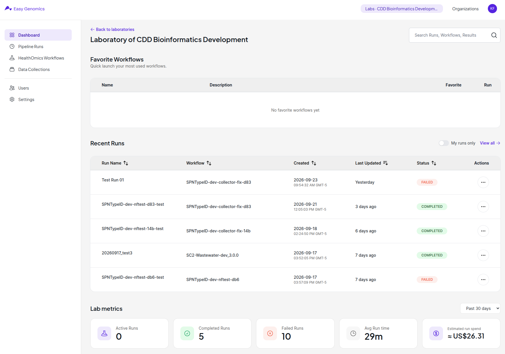
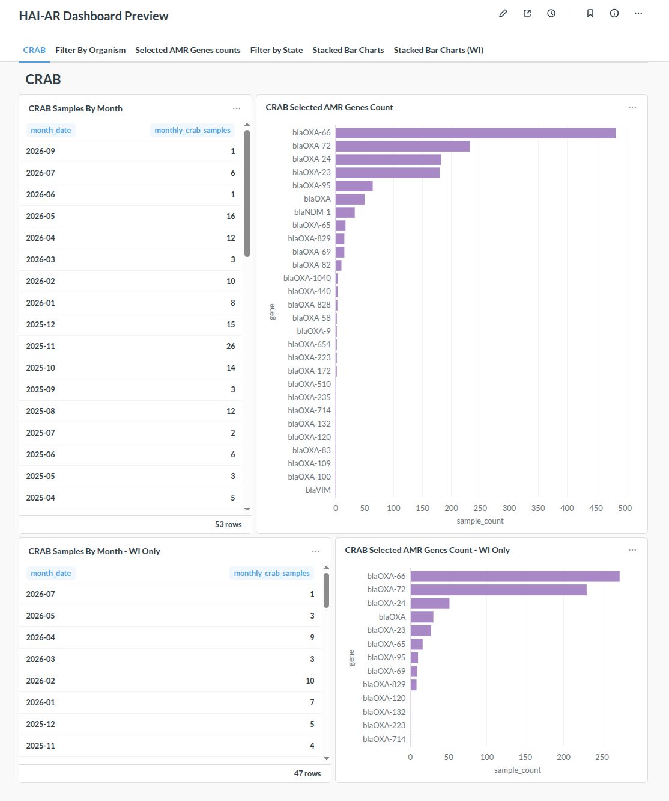
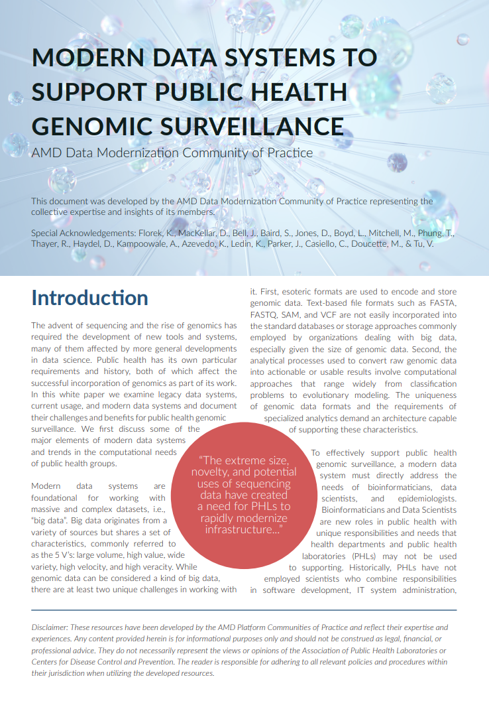
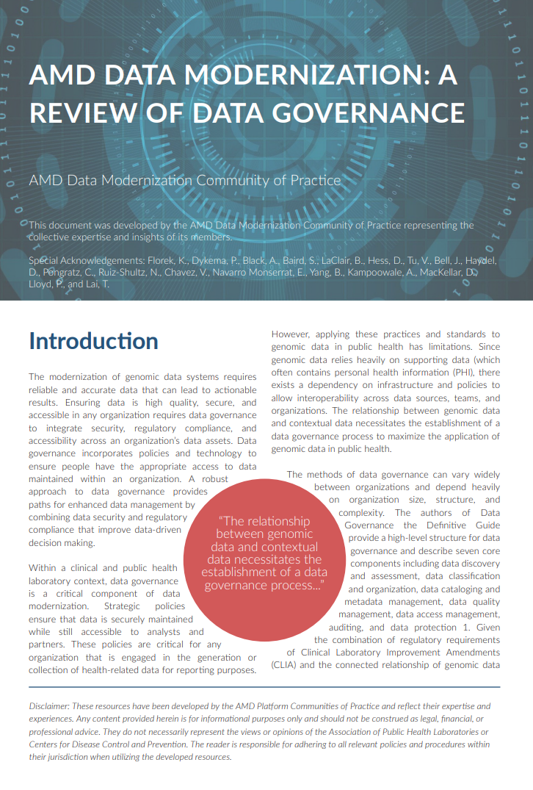

WSLH CDD bioinformatics capabilities and service updates
Kelsey Florek, PhD, MPH
Senior Genomics and Data Scientist
Wisconsin State Laboratory of Hygiene
September 29, 2026
Objectives
- Describe the bioinformatics capabilities and services of the Communicable Disease Division
- Highlight recent updates and improvements in the Communicable Disease Division's bioinformatics services
- Showcase examples of bioinformatics workflows used by the Communicable Disease Division
Advanced Molecular Detection (AMD)
The AMD program is helping to modernize disease-investigation capabilities by building and integrating laboratory, bioinformatics, and epidemiology technologies across CDC and in state and local public health systems. These modern tools deliver a greater level of detailed information on infectious pathogens than older, slower, and less cost-effective methods.
The AMD program works with experts across CDC to ensure the United States has the infrastructure and technology needed to protect Americans from infectious disease threats. The AMD program collaborates with other CDC programs to facilitate development and pilot testing of next-generation diagnostic tests and protocols. Programs throughout CDC leverage these tools against a variety of infectious pathogens and also help state and local public health agencies tap into them.
AMD Key Priorities
- Workforce Development and Training
- Development and Implementation of Bioinformatic Resources and Technical Assistance
- Enhance Sequencing and Bioinformatics Capacity
- Support AMD Platform Development
Workforce Development and Training


Workforce Development and Training

Development and Implementation of Bioinformatic Resources and Technical Assistance

- SPNtypeID-Streptococcus pneumoniae
- Spriggan-HAI/AR
- Dryad-Bacterial Outbreaks
- MycoSNP-Fungal
- TB-Tester-TB (Not yet public)
Enhance Sequencing and Bioinformatics Capacity
Enhance Sequencing and Bioinformatics Capacity

Enhance Sequencing and Bioinformatics Capacity

Enhancing Bioinformatic Data for Epidemiological Use
- Standing up databases capable of serving genomic data results for downstream integration
- Deployment of user-friendly data interfaces
- Integration of epidemiological incident accession IDs with genomic data
AMD Platform: Data Modernization
Modern Genomic Data Systems

AMD Platform: Data Modernization
Genomic Data Governance
